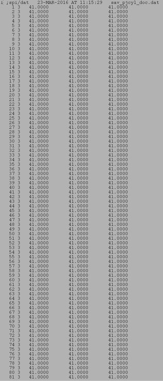
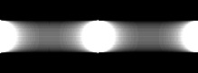

| .OPERATION: | PJ CYL | ; Project volume |
| .INPUT FILE: | sav_pjcyl_vol | ; Volume (input) |
| .OUTPUT FILE: | pjcyl | ; Image (output) |
| .STARTING ANGLE (0 = 3 OCLOCK): | 0 | ; Starts along x axis |
| .INNER, OUTER RADIUS: | 5, 35 | ; Radii |
| .NEW ANGULAR INCREMENT OR <RET>: | ; Use default angle | |
| .COLUMNS FOR XCENTER & ZCENTER: | 1, 3 | ; 1, 3 |
| .DOCUMENT FILE: | sav_pjcyl_doc | ; Doc file (input) |
| Input volume (Surface view) | Input doc file | |
|---|---|---|
|  |
| Output Projection Image |
|---|
|  |